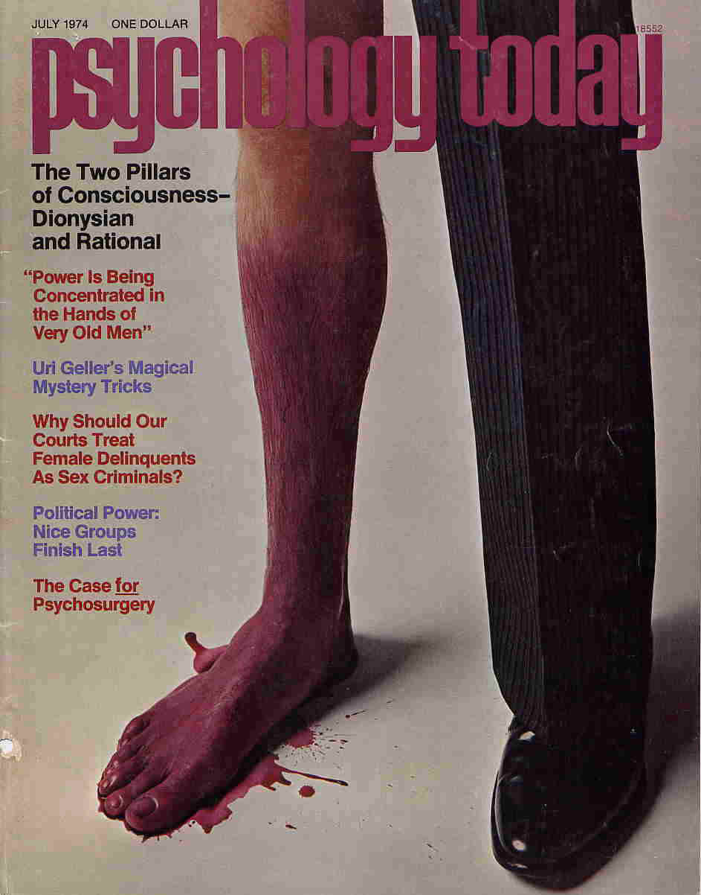
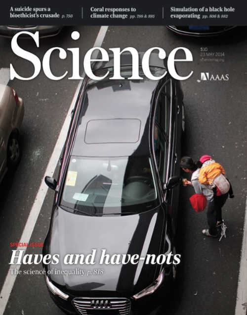
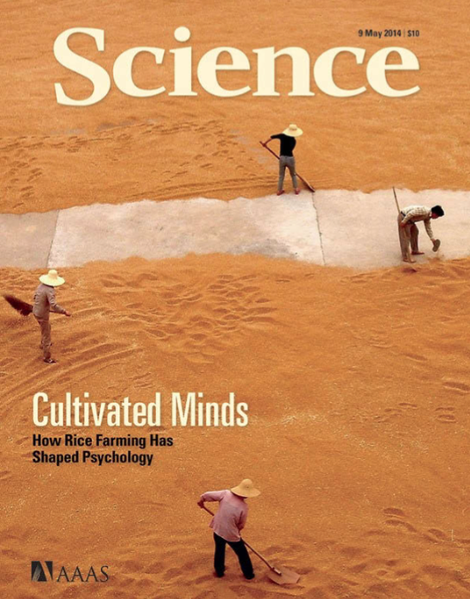

Psicología - Nivel 1, jornada vespertina, lunes 19:00PM-21:45PM - Otoño 2016 - UAC-SF · Prof. Hans Sigrist
«Si supiese qué es lo que estoy haciendo, no lo llamaría investigación, ¿verdad?. Albert Eintein

Siga las instrucciones iniciales, luego siga el enlace Pulse aqui para constestar el Test, y complete el cuestionario. Al final del mismo, deberá introducir el texto de una imagen para confirmar que es «un humano» quien realiza el Test y podrá además escoger si desea recibir vía correo sus respuestas. Es una buena idea recibir por correo dicha respuesta, de modo pueda establecer comparativas posteriores. Una vez finalice y tenga sus resultados (son inmediatos), complete la siguiente solicitud, con la cual elaboraremos una muestra estadística, una suerte de «panorama de estilos de aprendizaje de la comunidad».
48,35,46,44,43,42,39,44,49,49,44,39,38,49,49,53,56,57,51,61,53,66,71,75,72,65, 67,38,38,44,43,47,46,57,52,54,56,53,64,53,58,54,59,56,62,50,64,53,61,53,62,57, 52,54,61,59,51,50,50,50,55,63,50,59,54,60,50,56,68,66,71,82,68,78,66,70,66,78, 69,71,69,78,66,68,71,52,53,61,60,53,53,50,53,54,61,61,61,64,53,53,54,61,60,51, 50,53,64,64,53,60,54,55,58,37,46,44,44,48,49,30,45,47,45,48,47,47,44,48,43,45, 40,48,49,57,52,54,53,62,52,62,57,59,59,56,57,53,59,61,55,61,56,52,54,69,77,76, 71,43,47,48,37,40,42,38,39,43,46,34,46,46,48,47,43,62,62,54,53,61,54,51,62,57, 50,64,63,65,71,71,73,66
En esta unidad nos introduciremos en el uso del lenguaje R, por medio del entorno de trabajo SageMath Cell. Ambos proveen un ambiente que permite la obtención de resultados matemáticos y por ende de la estadística, que es la que nos convoca en esta unidad.
Una página dedicada al entorno de trabajo SageMath Cell y que opera por defecto con el lenguaje R, se encuentra disponible en el enlace siguiente:
Podrá, de igual modo, acceder a una página dedicada a ayuda y orientación respecto al uso del lenguaje R, en el enlace siguiente:
… estarán de acuerdo conmigo en que cualquiera que conozca un contenido y se lo «aprenda bien», puede transmitirlo, con o sin apoyo de atractivas presentaciones PowerPoint. Ni siquiera necesita manejar alguna estrategia para hacerlo. Pero, me pregunto, ¿para qué alguien va la universidad y llega a titularse de profesor o se capacita para serlo, si simplemente transmitirá contenidos al igual que hace cualquier persona sin esa formación? Investigaciones afirman que esa práctica es una pérdida de tiempo: Ni aprende quien transmite, ni menos quien recibe la información. Quien transmite la información no transita por un proceso de aprendizaje que lo implique, pues sólo necesita apoyarse de algunos soportes físicos para hacerlo. A su vez, quien recibe la información, al no ser inducido en un real proceso de aprendizaje, sólo acumulará contenidos, al igual que quien se los transmite. En definitiva, se trata de un círculo vicioso, altamente ineficiente, algo así como la llamada «ilusión de competencias» (ambos creen que saben, pero no saben). Por ejemplo, nadie aprenderá a ser líder simplemente escuchando teorías sobre el liderazgo. Según Anxo Pérez, uno de los emprendedores más singulares del panorama reciente en España, la educación esconde la parte práctica. Anxo plantea la tesis del «Puente de ida y vuelta»: Primero está la parte práctica para darle sentido a la teoría y luego de vuelta a la teoría, utilizando la experiencia de la parte práctica para comprenderla. Entonces, la clave parece ser no transmitir información para almacenarla, sino enseñar a aprender a utilizarla críticamente…
… quiero compartir con ustedes parte de los contenidos del curso Learning to learn, de la Universidad de California, en San Diego. Investigaciones demuestran que cuando hacemos una pregunta, buscando que alguien nos de la respuesta, no estamos haciendo nada, es decir, no estamos resolviendo el problema, pues otro lo hizo por nosotros. Según la Dra. Barbara Oakley de dicha universidad, cuando no nos involucramos activamente en nuestro proceso de aprendizaje, no aprendemos nada, pues necesitamos tejer los nuevos conceptos con nuestro propio circuito neural subyacente. Cuando almacenamos información de la manera fácil (consultando a otros), pensando que ya tenemos la solución, se trata simplemente de “ilusiones de competencia” (creemos que sabemos, pero, en realidad no sabemos), lo que, de acuerdo con esta investigadora, constituye un proceso ineficiente de aprender…
Lo anterior, en relación a la necesidad de conocer las respuestas a los Cuestionarios 1, 2 y 3 ya socializados con la comunidad y que paso a compartir un resumen de las respuestas recibidas a la fecha. Como podrán observar, no todos ni todas participaron, lo cual hace poco efectiva la retroalimentación, que en este caso -y lo podrá constatar- habría sido fruto únicamente de su experiencia (en este caso una colectiva).
Es importante que cautele leer las instrucciones que se indican en el mismo documento Word que comparto, en él se describe un mecanismo automatizado que le permitirá la inserción de su Glosario de una manera dinámica y elegante. La carga del Glosario, debe realizarla siguiendo la misma instrucción anterior (Semana 2), que indica como nombrar su archivo.
Investigar, desarrollar una capacidad indagativa, no debe necesariamente ser un proceso monótono y/o aburrido. Si logra sentir satisfacción por hallar posibles respuestas a semejantes enigmas, su motivación y empatía por el aprendizaje será continua.
Una vez finalice su trabajo, cárguelo usando el siguiente enlace
- 10.1.1.331.9796.pdf
- 173.pdf
- 1ciencia_conocimiento.pdf
- https://kieranhealy.org/blog/archives/2015/12/03/assault-death-rates-in-the-united-states-1999-2013/
- 268-2013-07-29-Pinuel_Raigada_AnalisisContenido_2002_EstudiosSociolinguisticaUVigo.pdf
- 815.pdf
- Dialnet-PerspectivasVygotskianasEnLaEducacion-668450.pdf
- https://consequently.org/writing/three-cultures/
- Duelo_y_melancolia-Sigmund_Freud.pdf
- RIP03834.pdf
- http://hsigrist.github.io/lecturas/bpa/
- Science.Magazine.5731.2005-07-01.pdf
Una vez finalice, simplemente nombre su archivo de la forma Referencias_BIC_Psicologia_Apellido_Nombre.docx y cárguelo en el siguiente enlace:
¿Se le ocurre una forma distinta de nombrar los archivos?
Con la finalidad de promover la lectura, se solicita una lectura crítica y reflexiva del documento:
Hoy revisaremos el texto en conjunto, la próxima semana y a partir de lo reflexionado haremos una ronda de preguntas e intervenciones.
Una de la actividades con las que finalizaremos este semestre, será la confección individual de un Glosario que irá poblándose de todos los conceptos e ideas que trasunten en torno a la asignatura BIC. Será su responsabilidad cargar el documento el día con cierre a las 00:00PM.
Remítase en lo sucesivo a este espacio para obtener las palabras claves, por ahora se proponen los siguientes conceptos:
ciencia · empírico · epistemología · antropología · verdad · evidencia · validez · ensayo-error · TDA/H · salud · inductivo · deductivo · teoría · cognitivo · constructo · ensayo · monografía · tesis · tesina · sociedad · enfermedad · duelo · emoción · sentimiento · fortaleza · principios · valores · justicia · psicología · auto-cuidado · auto-regulación · conocimiento · praxis · ethos · hipocampo · causa · efecto · posición supina · bienestar · infancia · adolescencia · adultez · vejez
En este mismo espacio se dispondrán las especificaciones de forma y fondo del Glosario, una vez terminado nombre su archivo de la forma Glosario_BIC_Psicologia_Apellido_Nombre.docx y cárguelo utilizando el enlace siguiente:
Nuestra Institución promueve el aprendizaje activo y colaborativo, en este sentido, las acciones deben estar centradas en el estudiante, de tal forma, se velará por facilitar la activación de conocimientos previos, que impulsen el establecimiento de relaciones y construcciones de nuevos saberes.
Ejemplos de estrategias en esta línea son:
De igual modo, atendiendo a la necesidad de activar conocimientos previos, se favorecerá el Método de la Lectura Previa (MLP), así como:
Con el objeto de verificar y calificar el nivel de logro de los aprendizajes, se establece en el Programa de la Asignatura, desde la perspectiva de los momentos y propósitos de evaluación, la aplicación de los siguientes tipos de instrumentos de medición:
Estrategia Evaluativa Diagnóstica (2 horas): Aplicación de Prueba Objetiva. Estrategia Evaluativa Formativa: Aplicación de instancias como realización de preguntas claves, aplicación de quiz, observación de los procesos constructivos, etc. Estrategia Evaluativa Sumativa: Trabajos de investigación, presentaciones orales y escritas y pruebas. Se aplicarán tres instancias evaluativas que ponderarán el 70% de la Nota Final de la asignatura:
Las Evaluaciones Sumativas (Pruebas Parciales), representan el 100% y se desglosan del modo siguiente:
- Primera calificación (35%)
- Segunda calificación (35%)
- Tercera calificación (30%)
Dada la pertenencia de la actual asignatura a nuestra Línea de Formación Remedial, ésta no considera la eximición del Examen Final, que tendrá una asignación del 30%. El restante 70% corresponde a su nota de presentación.
En la actual asignatura utilizaremos el denominado Método de la Lectura Previa (MLP), que permitirá a la audiencia llegar a clases mejor equipados con insumos previamente asignados/propuestos. La idea es simple, con ello favorecemos la clase en una experiencia dialógica y podremos de esta forma intercambiar puntos de vista respecto de algún tema de interés.
Este método resulta muy interesante y al mismo tiempo es una excelente oportunidad de crecimiento personal, en tanto promueve la relación de conceptos, para ello es necesario que dada la ocasión de una MLP, puedan establecer relaciones causales o comparaciones, clasificaciones. Aquí la memoria juega un rol importante, existe una crítica respecto a que los métodos de enseñanza relacionados con construir conocimiento «limpian» la memoria, en tanto solo promueven el aprendizaje experiencial y no la memoria. Pues bien, con este método podrán infundir una práctica que apunte a remediar este problema: la memoria almacenará cierto stock de conceptos y datos a partir de los cuales podrán recrear y pensar.
La invitación es a dar una lectura comprensiva, aquí verán que ahora la memoria ya no basta, debemos incorporar a su vez una comprensión léxica para ir avanzando hacia temáticas más avanzadas o complejas.
Lo anterior, lo evidenciarán en la medida que sean capaces de responder a diversas preguntas que estableceré con el único objetivo de ir «subiendo» en lo niveles de comprensión lectora.
En adelante, cuando se utilicemos el MLP, debe velar por dar justo cumplimiento a lo solicitado, no procrastine, no aplaze, tómese un tiempo y ubique la acción en un lugar que no propicie las interrupciones.
Estimadas y estimados estudiantes, reciban la bienvenida a este espacio académico y de desarrollo personal. En esta oportunidad, la asignatura Bases de la Investigación Científica, está dirigida a la audiencia de nuestra carrera profesional Psicología, ubicada en el 1er. semestre lectivo. Como es costumbre al compartir espacios, se hace primordial la práctica de la convivencia, es decir, el saber vivir y convivir con otros y otras. Además, de velar por la puntualidad y la asistencia, es necesario que se plantee un compromiso con la asignatura, con la consecución de sus propias metas, y no sólo con ésta, sino con todo acto o proceso que inicie.
En adelante me referiré a la mencionada audiencia, como «comunidad», con ello favorecemos el sentido de equipo y de convivencia.
Bienvenidos y bienvenidas a todos y todas, reciban mi más cordial saludo y deseos de éxito en este camino que iniciamos todos juntos, Hans.
- Email: hans.sigrist@uac.cl
- Twitter: @hsigrist
- Web: hsigrist.github.io
La asignatura de Bases de la Investigación científica, responde al eje de formación remedial y como tal se constituye en una asignatura de nivelación vinculada al área de las ciencias asociadas a las asignaturas de bioestadística y metodología de la investigación. En éste contexto se destaca que la asignatura de Bases de la formación científica ha centrado los núcleos de aprendizajes en aquellos aspectos que se requieren para favorecer la comprensión de los procesos que implican tratamiento de datos. Como núcleos temáticos centrales se considera la importancia de abordar el método científico, la representación y análisis de resultados, el uso de tablas y gráficos, variables y frecuencias como formas variadas de organización y presentación de la información, así como la búsqueda de información relevante en recursos electrónicos vinculados al área de la salud.
Junto con el proceso de evaluación propio de la asignatura, se considera la medición de los conocimientos en una instancia diagnóstica y final. Esta estrategia propende a entregar insumos de información respecto del avance y logros alcanzados por los estudiantes.
A continuación, comparto con la comunidad el Programa de la Investigación Científica:
La relación con el perfil de egreso se vincula con la línea de formación básica, siendo bases de la formación científica una asignatura que busca nivelar aquellos conocimientos que se requieren para favorecer la adaptación y continuidad con éxito de los estudiantes en su formación profesional. Por tanto la relación es directa con el dominio de saberes vinculados a las ciencias y a los procesos de investigación científica. Es decir contribuirá a comprender los procesos vinculados a la investigación, declarado en el perfil de egreso del Área de la Salud.
El estudio de la calidad de vida en las personas, en los grupos humanos en las sociedades es uno de los tópicos de investigación más importantes en esta segunda década del s. XXI. Al considerar que se lograron satisfacer, las necesidades básicas de supervivencia, nutrición, vivienda, trabajo, salud para grandes segmentos de la población - ante todo en el mundo industrializado o Primer Mundo - es hora de dar prioridad a la calidad de vida, a la realización de las potencialidades y al logro de una vida plena, en armonía con uno mismo, con otras personas y con la naturaleza. Prólogo de Rubén Ardilla al libro editado por el psicólogo Emilio Moyano Díaz «Calidad de Vida y Psicología en el Bicentenario de Chile» (2012).
A partir de su obra La estructura de las revoluciones científicas, Kuhn (2006) define las revoluciones científicas como las discontinuidades en el desarrollo de la ciencia o los episodios extraordinarios en los que se produce un cambio en los compromisos profesionales. Por paradigma definió los intentos por descubrir la fuente de esas discontinuidades y por ciencia normal define la investigación basada firmemente en uno o más logros científicos pasados, logros que una comunidad científica particularmente reconoce durante algún tiempo como el fundamento de su práctica ulterior.


Estimadas y estimados estudiantes, los invito a auto-evaluar su aprendizaje mediante una serie de cuestionarios que irán apareciendo en este espacio.
Estimados/as estudiantes, a continuación encontrarán tres abstract’s o resúmenes de diversos artículos de Psicología. Se le pide que i) proponga un título para cada uno, además de ii) sistematizar el problema de investigación iii) proponga una metodología que muestre los instrumentos de recogida de información, corte temporal, alcance, muestra, en el caso que estén presentes.
Se realiza una síntesis acerca del concepto calidad de vida (CV), poniéndose en relieve la insuficiencia de indicadores de tipo económico -bienestar económico- corrientemente en boga para dar cuenta de aquella. Desde la psicología las operacionalizaciones se han efectuado a partir de dos enfoques generales; el hedónico entendido aquel como bienestar subjetivo (BS), y la eudamónica como bienestar psicológico (BP). El BS a sido operacionalizado a su vez como satisfacción con la vida o también, como felicidad, donde la primera aparece como una evaluación cognitiva de más largo plazo y la segunda como un equilibrio entre afectos positivos y negativos en temporalidades acotadas. El BP, en cambio ha sido operacionalizado como desarrollo de capacidades y crecimiento personal, donde aquel se produciría como resultado de lograr metas u objetivos suficientemente exigentes para cada quien. Un esfuerzo de integración de ambos enfoques está representado inicialmente por la creación de algunos instrumentos conocidos como escalas de bienestar psicológico (Ryff, 1989; Ryff y Keyes, 1995) y modelos factoriales derivados posteriormente (Dierengdonck, 2004; Díaz et al. 2006).
Se realiza un estado del arte de la CV mediante investigaciones relevantes e ilustrativas y organizadas en cinco líneas de investigación: i) desarrollo humano, CV, y bienestar subjetivo, ii) CV laboral y organizaciones propendedoras de bienestar, iii) CV e interfase familia-trabajo y relaciones interpersonales saludables, iv) CV y salud mental y, v) un sobrevuelo a los métodos de estudiar la CV.
Se explora la confiabilidad y estructura factorial de tres instrumentos relativos a bienestar subjetivo: la escala de satisfacción con la vida (ESV; Diener et al. 1985), de felicidad subjetiva (EFS; Lyubomirsky & Lepper, 1999) y de salud (ICVRS; Hennessy, 1994) en una muestra de 133 pregraduados mediante dispositivo test-retest de 10 semanas.
La consistencia interna medida mediante coeficiente de alfa de Cronbach es de \(0.87\) y de \(0.79\) para la ESV y la EFS respectivamente. La confiabilidad test-retest es de \(.83\), \(.77\) y \(.66\), para la ESV, EFS, y ICVRS, respectivamente. La ESV y la EFS aparecen positivamente correlacionadas (\(r=.67\)). Los análisis factoriales exploratorios realizados conducen soluciones unidimensionales para cada escala, explicando el \(65%\) y el \(61.08%\) de la varianza para la ESV y la EFS respectivamente.
La ezquizofrenia es un grave trastorno psiquiátrico de considerables consecuencias y alteraciones cognitivas, afectivas y sociales. Este estudio indagó acerca de las posibles relaciones entre el tipo de tratamiento recibido y la calidad de vida e indicadores sintomatológicos en pacientes ezquizofrénicos de la región del Maule.
Se aplicó un instrumento de calidad de vida a \(167\) pacientes y uno de sintomatología a \(141\) que concurren a los hospitales y centros de rehabilitación de la región.
Los resultados indican que ni el tipo de tratamiento medicamentoso ni la presencia o ausencia de rehabilitación psicosocial se relacionan en forma unívoca con todos los factores de calidad de vida y sintomatología. Entre los resultados específicos obtenidos, destaca el hecho de que los pacientes que asisten a rehabilitación psicosocial no presentan mejores indicadores de calidad de vida que aquellos que no asisten, salvo por el hecho de que se sienten con mayor control de su situación económica y por poseer una notable y significativa menor presencia de síntomas psicopatológicos. En el caso de la medicación recibida, lo pacientes que se tratn con antipsicóticos atípicos tienen una mejor percepción de su entorno afectivo más cercano y también del tratamiento psiquiátrico recibido. Un resultado inesperado es el hecho que los pacientes que no asisten a rehabilitación psicosocial superen en varios indicadores de calidad de vida a aquellos que asisten a estos programas (por ejemplo, vida amorosa y sexual), lo cual puede significar que los que asisten a estos programas presentan disfunciones más profundas o bine que los programas introducen otras variables, tales como la comparación social, que afectan negativamente las percepciones subjetivas de los pacientes acerca de sí mismos.
Comparto con la comunidad material oficial de la asignatura, lo pueden descargar en el enlace siguiente
Gold, P. B., Rubey, R. N., & Harvey, R. T. (2002). Naturalistic, Self‐Assignment Comparative Trial of Bupropion SR, a Nicotine Patch, or Both for Smoking Cessation Treatment in Primary Care. The American journal on addictions, 11(4), 315-331.